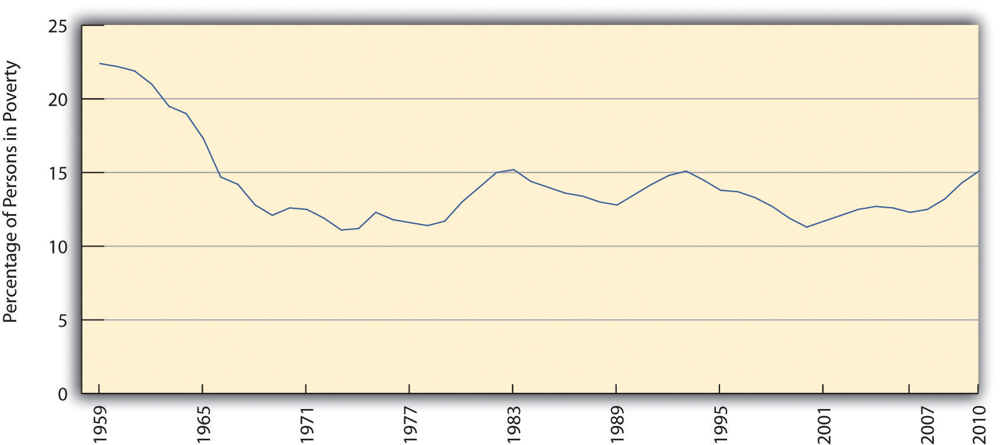
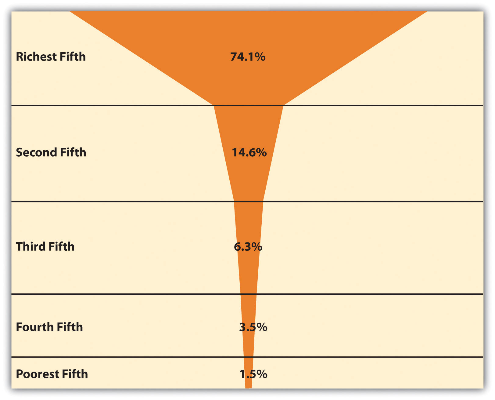
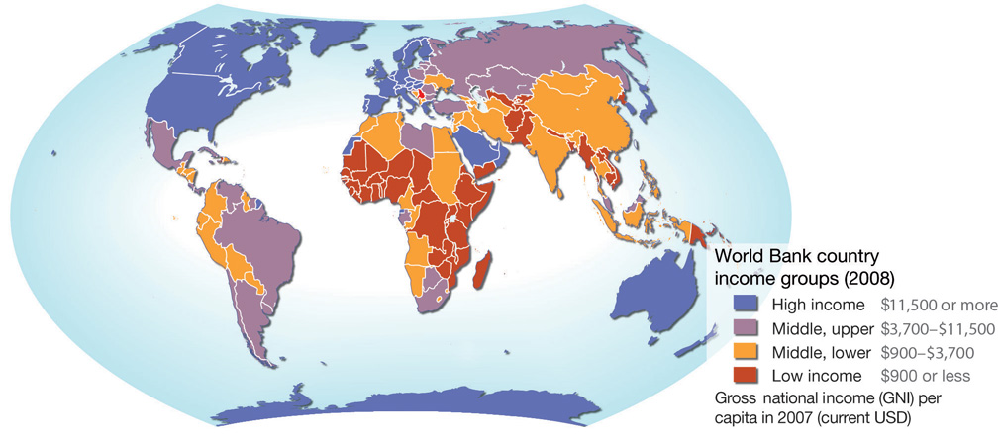
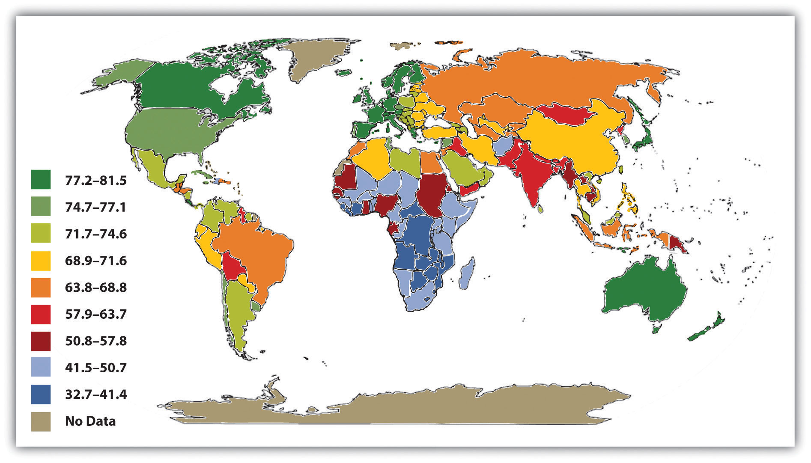
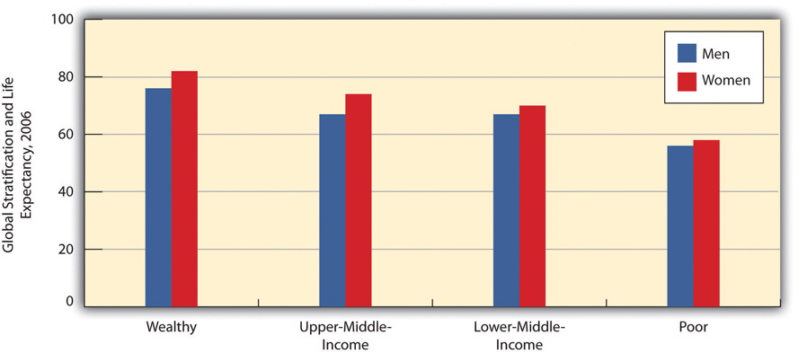
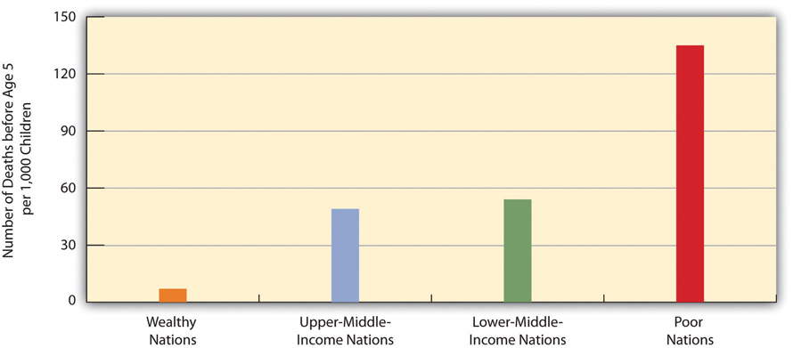
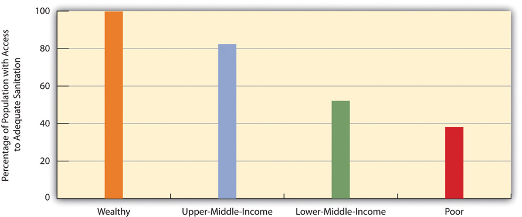
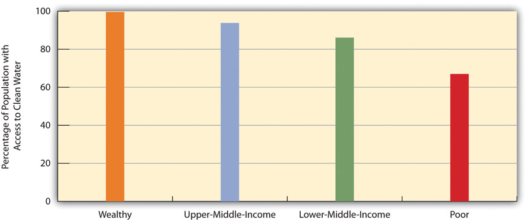
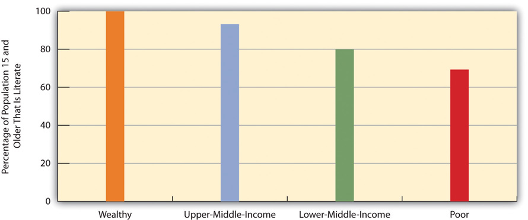

“Survey: More US Kids Go to School Hungry,” the headline said. As the US economy continued to struggle, a nationwide survey of 638 public school teachers in grades K–8 conducted for Share Our Strength, a nonprofit organization working to end childhood hunger, found alarming evidence of children coming to school with empty stomachs. More than two-thirds of the teachers said they had students who “regularly come to school too hungry to learn—some having had no dinner the night before,” according to the news article. More than 60 percent of the teachers said the problem had worsened during the past year, and more than 40 percent called it a “serious” problem. Many of the teachers said they spent their own money to buy food for their students. As an elementary school teacher explained, “I’ve had lots of students come to school—not just one or two—who put their heads down and cry because they haven’t eaten since lunch yesterday” (United Press International, 2011).United Press International. (2011, February 23). Survey: More U.S. kids go to school hungry. UPI.com. Retrieved from http://www.upi.com/Health_News/2011/2002/2023/Survey-More-US-kids-go-to-school-hungry/UPI-20871298510763/.
The United States is one of the richest nations in the world. Many Americans live in luxury or at least are comfortably well-off. Yet, as this poignant news story of childhood hunger reminds us, many Americans also live in poverty or near poverty. This chapter explains why poverty exists and why the US poverty rate is so high, and it discusses the devastating consequences of poverty for the millions of Americans who live in or near poverty. It also examines poverty in the poorest nations of the world and outlines efforts for reducing poverty in the United States and these nations.
Although this chapter will paint a disturbing picture of poverty, there is still cause for hope. As we shall see, the “war on poverty” that began in the United States during the 1960s dramatically reduced poverty. Inspired by books with titles like The Other America: Poverty in the United States (Harrington, 1962)Harrington, M. (1962). The other America: Poverty in the United States. New York, NY: Macmillan. and In the Midst of Plenty: The Poor in America (Bagdikian, 1964)Bagdikian, B. H. (1964). In the midst of plenty: The poor in America. Boston, MA: Beacon Press. that described the plight of the poor in heartbreaking detail, the federal government established various funding programs and other policies that greatly lowered the poverty rate in less than a decade (Schwartz, 1984).Schwartz, J. E. (1984, June 18). The war we won: How the great society defeated poverty. The New Republic, 18–19. Since the 1960s and 1970s, however, the United States has cut back on these programs, and the poor are no longer on the national agenda. Other wealthy democracies provide much more funding and many more services for their poor than does the United States, and their poverty rates are much lower than ours.
Still, the history of the war on poverty and the experience of these other nations both demonstrate that US poverty can be reduced with appropriate policies and programs. If the United States were to go back to the future by remembering its earlier war on poverty and by learning from other Western democracies, it could again lower poverty and help millions of Americans lead better, healthier, and more productive lives.
But why should we care about poverty in the first place? As this chapter discusses, many politicians and much of the public blame the poor for being poor, and they oppose increasing federal spending to help the poor and even want to reduce such spending. As poverty expert Mark R. Rank (2011, p. 17)Rank, M. R. (2011). Rethinking American poverty. Contexts, 10(Spring), 16–21. summarizes this way of thinking, “All too often we view poverty as someone else’s problem.” Rank says this unsympathetic view is shortsighted because, as he puts it, “poverty affects us all” (p. 17).Rank, M. R. (2011). Rethinking American poverty. Contexts, 10(Spring), 16–21. This is true, he explains, for at least two reasons.
First, the United States spends much more money than it needs to because of the consequences of poverty. Poor people experience worse health, family problems, higher crime rates, and many other problems, all of which our nation spends billions of dollars annually to address. In fact, childhood poverty has been estimated to cost the US economy an estimated $500 billion annually because of the problems it leads to, including unemployment, low-paid employment, higher crime rates, and physical and mental health problems (Eckholm, 2007).Eckholm, E. (2007, January 25). Childhood poverty is found to portend high adult costs. New York Times, p. A19. If the US poverty rate were no higher than that of other democracies, billions of tax dollars and other resources would be saved.
Second, the majority of Americans can actually expect to be poor or near poor at some point in their lives, with about 75 percent of Americans in the 20–75 age range living in poverty or near poverty for at least one year in their lives. As Rank (2011, p. 18)Rank, M. R. (2011). Rethinking American poverty. Contexts, 10(Spring), 16–21. observes, most Americans “will find ourselves below the poverty line and using a social safety net program at some point.” Because poverty costs the United States so much money and because so many people experience poverty, says Rank, everyone should want the United States to do everything possible to reduce poverty.
Sociologist John Iceland (2006)Iceland, J. (2006). Poverty in America: A handbook. Berkeley, CA: University of California Press. adds two additional reasons for why everyone should care about poverty and want it reduced. First, a high rate of poverty impairs our nation’s economic progress: When a large number of people cannot afford to purchase goods and services, economic growth is more difficult to achieve. Second, poverty produces crime and other social problems that affect people across the socioeconomic ladder. Reductions in poverty would help not only the poor but also people who are not poor.
We begin our examination of poverty by discussing how poverty is measured and how much poverty exists.
When US officials became concerned about poverty during the 1960s, they quickly realized they needed to find out how much poverty we had. To do so, a measure of official poverty, or a poverty lineThe government’s measure of official poverty, based on the cost of a minimal diet for a family that is then multiplied by three., was needed. A government economist, Mollie Orshanky, first calculated this line in 1963 by multiplying the cost of a very minimal diet by three, as a 1955 government study had determined that the typical American family spent one-third of its income on food. Thus a family whose cash income is lower than three times the cost of a very minimal diet is considered officially poor.
This way of calculating the official poverty line has not changed since 1963. It is thus out of date for many reasons. For example, many expenses, such as heat and electricity, child care, transportation, and health care, now occupy a greater percentage of the typical family’s budget than was true in 1963. In addition, this official measure ignores a family’s noncash income from benefits such as food stamps and tax credits. As a national measure, the poverty line also fails to take into account regional differences in the cost of living. All these problems make the official measurement of poverty highly suspect. As one poverty expert observes, “The official measure no longer corresponds to reality. It doesn’t get either side of the equation right—how much the poor have or how much they need. No one really trusts the data” (DeParle, Gebeloff, & Tavernise, 2011, p. A1).DeParle, J., Gebeloff, R., & Tavernise, S. (2011, November 4). Bleak portrait of poverty is off the mark, experts say. New York Times, p. A1. We’ll return to this issue shortly.
The poverty line is adjusted annually for inflation and takes into account the number of people in a family: The larger the family size, the higher the poverty line. In 2010, the poverty line for a nonfarm family of four (two adults, two children) was $22,213. A four-person family earning even one more dollar than $22,213 in 2010 was not officially poor, even though its “extra” income hardly lifted it out of dire economic straits. Poverty experts have calculated a no-frills budget that enables a family to meet its basic needs in food, clothing, shelter, and so forth; this budget is about twice the poverty line. Families with incomes between the poverty line and twice the poverty line (or twice poverty) are barely making ends meet, but they are not considered officially poor. When we talk here about the poverty level, then, keep in mind that we are talking only about official poverty and that there are many families and individuals living in near poverty who have trouble meeting their basic needs, especially when they face unusually high medical expenses, motor vehicle expenses, or the like. For this reason, many analysts think families need incomes twice as high as the federal poverty level just to get by (Wright, Chau, & Aratani, 2011).Wright, V. R., Chau, M., & Aratani, Y. (2011). Who are America’s poor children? The official story. New York, NY: National Center for Children in Poverty. They thus use twice-poverty data (i.e., family incomes below twice the poverty line) to provide a more accurate understanding of how many Americans face serious financial difficulties, even if they are not living in official poverty.
With this caveat in mind, how many Americans are poor? The US Census Bureau gives us some answers that use the traditional, official measure of poverty developed in 1963. In 2010, 15.1 percent of the US population, or 46.2 million Americans, lived in official poverty (DeNavas-Walt, Proctor, & Smith, 2011).DeNavas-Walt, C., Proctor, B. D., & Smith, J. C. (2011). Income, poverty, and health insurance coverage in the United States: 2010 (Current Population Reports, P60-239). Washington, DC: US Census Bureau. This percentage represented a decline from the early 1990s but was higher than 2000 and even higher than the rate in the late 1960s (see Figure 2.1 "US Poverty, 1959–2010"). If we were winning the war on poverty in the 1960s (notice the sharp drop in the 1960s in Figure 2.1 "US Poverty, 1959–2010"), since then poverty has fought us to a standstill.
Figure 2.1 US Poverty, 1959–2010
Source: Data from US Census Bureau. (2011). Historical poverty tables: People. Retrieved from http://www.census.gov/hhes/www/poverty/data/historical/people.html.
Another way of understanding the extent of poverty is to consider episodic povertyAs defined by the Census Bureau, being poor for at least two consecutive months in some time period., defined by the Census Bureau as being poor for at least two consecutive months in some time period. From 2004 to 2007, the last years for which data are available, almost one-third of the US public, equal to about 95 million people, were poor for at least two consecutive months, although only 2.2 percent were poor for all three years (DeNavas-Walt, et al., 2010).DeNavas-Walt, C., Proctor, B. D., & Smith, J. C. (2010). Income, poverty, and health insurance coverage in the United States: 2009 (Current Population Reports, P60-238). Washington, DC: US Census Bureau. As these figures indicate, people go into and out of poverty, but even those who go out of it do not usually move very far from it. And as we have seen, the majority of Americans can expect to experience poverty or near poverty at some point in their lives.
The problems in the official poverty measure that were noted earlier have led the Census Bureau to develop a Supplemental Poverty Measure. This measure takes into account the many family expenses in addition to food; it also takes into account geographic differences in the cost of living, taxes paid and tax credits received, and the provision of food stamps, Medicaid, and certain other kinds of government aid. This new measure yields an estimate of poverty that is higher than the rather simplistic official poverty measure that, as noted earlier, is based solely on the size of a family and the cost of food and the amount of a family’s cash income. According to this new measure, the 2010 poverty rate was 16.0 percent, equal to 49.1 million Americans (Short, 2011).Short, K. (2011). The research supplemental poverty measure: 2010 (Current Population Reports, P60-241). Washington, DC: US Census Bureau. Because the official poverty measure identified 46.2 million people as poor, the new, more accurate measure increased the number of poor people in the United States by almost 3 million. Without the help of Social Security, food stamps, and other federal programs, at least 25 million additional people would be classified as poor (Sherman, 2011).Sherman, A. (2011). Despite deep recession and high unemployment, government efforts—including the Recovery Act—prevented poverty from rising in 2009, new census data show. Washington, DC: Center on Budget and Policy Priorities. These programs thus are essential in keeping many people above the poverty level, even if they still have trouble making ends meet and even though the poverty rate remains unacceptably high.
A final figure is worth noting. Recall that many poverty experts think that twice-poverty data—the percentage and number of people living in families with incomes below twice the official poverty level—are a better gauge than the official poverty level of the actual extent of poverty, broadly defined, in the United States. Using the twice-poverty threshold, about one-third of the US population, or more than 100 million Americans, live in poverty or near poverty (Pereyra, 2011).Pereyra, L. (2011). Half in Ten campaign criticizes House Republican funding proposal. Washington, DC: Center for American Progress. Those in near poverty are just one crisis—losing a job or sustaining a serious illness or injury—away from poverty. Twice-poverty data paint a very discouraging picture.
Who are the poor? Although the official poverty rate in 2010 was 15.1 percent, this rate differs by the important sociodemographic characteristics of race/ethnicity, gender, and age, and it also differs by region of the nation and by family structure. The poverty rate differences based on these variables are critical to understanding the nature and social patterning of poverty in the United States. We look at each of these variables in turn with 2010 census data (DeNavas-Walt et al., 2011).DeNavas-Walt, C., Proctor, B. D., & Smith, J. C. (2011). Income, poverty, and health insurance coverage in the United States: 2010 (Current Population Reports, P60-298). Washington, DC: US Census Bureau.
Here is a quick quiz; please circle the correct answer.
Most poor people in the United States are
What did you circle? If you are like the majority of people who answer a similar question in public opinion surveys, you would have circled a. Black/African American. When Americans think about poor people, they tend to picture African Americans (White, 2007).White, J. A. (2007). The hollow and the ghetto: Space, race, and the politics of poverty. Politics & Gender, 3, 271–280. This popular image is thought to reduce the public’s sympathy for poor people and to lead them to oppose increased government aid for the poor. The public’s views on these matters are, in turn, thought to play a key role in government poverty policy. It is thus essential for the public to have an accurate understanding of the racial/ethnic patterning of poverty.

The most typical poor people in the United States are non-Latino whites. These individuals comprise 42.4 percent of all poor Americans.
Image courtesy of Yunchung Lee, http://www.flickr.com/photos/bleuman/5677830843/.
Unfortunately, the public’s racial image of poor people is mistaken, as census data reveal that the most typical poor person is white (non-Latino). To be more precise, 42.4 percent of poor people are white (non-Latino), 28.7 percent are Latino, 23.1 percent are black, and 3.7 percent are Asian (see Figure 2.2 "Racial and Ethnic Composition of the Poor, 2010 (Percentage of Poor Persons Who Belong to Each Group)"). As these figures show, non-Latino whites certainly comprise the greatest number of the American poor. Turning these percentages into numbers, they account for 19.6 million of the 46.2 million poor Americans.
It is also true, though, that race and ethnicity affect the chances of being poor. While only 9.9 percent of non-Latino whites are poor, 27.4 percent of African Americans, 12.1 percent of Asians, and 26.6 percent of Latinos (who may be of any race) are poor (see Figure 2.3 "Race, Ethnicity, and Poverty, 2010 (Percentage of Each Group That Is Poor)"). Thus African Americans and Latinos are almost three times as likely as non-Latino whites to be poor. (Because there are so many non-Latino whites in the United States, the greatest number of poor people are non-Latino white, even if the percentage of whites who are poor is relatively low.) The higher poverty rates of people of color are so striking and important that they have been termed the “colors of poverty” (Lin & Harris, 2008).Lin, A. C., & Harris, D. R. (Eds.). (2008). The colors of poverty: Why racial and ethnic disparities persist. New York, NY: Russell Sage Foundation.
Figure 2.2 Racial and Ethnic Composition of the Poor, 2010 (Percentage of Poor Persons Who Belong to Each Group)

Source: Data from DeNavas-Walt, C., Proctor, B. D., & Smith, J. C. (2011). Income, poverty, and health insurance coverage in the United States: 2010 (Current Population Report P60-239). Washington, DC: US Census Bureau.
Figure 2.3 Race, Ethnicity, and Poverty, 2010 (Percentage of Each Group That Is Poor)

Source: Data from DeNavas-Walt, C., Proctor, B. D., & Smith, J. C. (2011). Income, poverty, and health insurance coverage in the United States: 2010 (Current Population Report P60-239). Washington, DC: US Census Bureau.
One thing that many women know all too well is that women are more likely than men to be poor. According to the census, 16.2 percent of all females live in poverty, compared to only 14.0 percent of all males. These figures translate to a large gender gap in the actual number of poor people, as 25.2 million women and girls live in poverty, compared to only 21.0 million men and boys, for a difference of 4.2 million people. The high rate of female poverty is called the feminization of poverty (Iceland, 2006).Iceland, J. (2006). Poverty in America: A handbook. Berkeley, CA: University of California Press. We will see additional evidence of this pattern when we look at the section on family structure that follows.
Turning to age, at any one time 22 percent of children under age 18 are poor (amounting to 16.4 million children), a figure that rises to about 39 percent of African American children and 35 percent of Latino children. About 37 percent of all children live in poverty for at least one year before turning 18 (Ratcliffe & McKernan, 2010).Ratcliffe, C., & McKernan, S.-M. (2010). Childhood poverty persistence: Facts and consequences. Washington, DC: Urban Institute Press. The poverty rate for US children is the highest of all wealthy democracies and in fact is 1.5 to 9 times greater than the corresponding rates in Canada and Western Europe (Mishel, Bernstein, & Shierholz, 2009).Mishel, L., Bernstein, J., & Shierholz, H. (2009). The state of working America 2008/2009. Ithaca, NY: ILR Press. As high as the US childhood poverty rate is, twice-poverty data again paint an even more discouraging picture. Children living in families with incomes below twice the official poverty level are called low-income children, and their families are called low-income families. Almost 44 percent of American children, or some 32.5 million kids, live in such families (Addy & Wright, 2012).Addy, S., & Wright, V. R. (2012). Basic facts about low-income children, 2010. New York, NY: National Center for Children in Poverty. Almost two-thirds of African American children and Latino children live in low-income families.
At the other end of the age distribution, 9 percent of people aged 65 or older are poor (amounting to about 3.5 million seniors). Turning around these age figures, almost 36 percent of all poor people in the United States are children, and almost 8 percent of the poor are 65 or older. Thus more than 43.4 percent of Americans living in poverty are children or the elderly.
Poverty rates differ around the country. Some states have higher poverty rates than other states, and some counties within a state are poorer than other counties within that state. A basic way of understanding geographical differences in poverty is to examine the poverty rates of the four major regions of the nation. When we do this, the South is the poorest region, with a poverty rate of 16.9 percent. The West is next (15.3 percent), followed by the Midwest (13.9 percent) and then the Northeast (12.8 percent). The South’s high poverty rate is thought to be an important reason for the high rate of illnesses and other health problems it experiences compared to the other regions (Ramshaw, 2011).Ramshaw, E. (2011, July 10). Major health problems linked to poverty. New York Times, p. A21.
There are many types of family structures, including a married couple living with their children; an unmarried couple living with one or more children; a household with children headed by only one parent, usually a woman; a household with two adults and no children; and a household with only one adult living alone. Across the nation, poverty rates differ from one type of family structure to another.
Not surprisingly, poverty rates are higher in families with one adult than in those with two adults (because they often are bringing in two incomes), and, in one-adult families, they are higher in families headed by a woman than in those headed by a man (because women generally have lower incomes than men). Of all families headed by just a woman, 31.6 percent live in poverty, compared to only 15.8 percent of families headed by just a man. In contrast, only 6.2 percent of families headed by a married couple live in poverty (see Figure 2.4 "Family Structure and Poverty Rate (Percentage of Each Type of Structure That Lives in Poverty)"). The figure for female-headed families provides additional evidence for the feminization of poverty concept introduced earlier.
Figure 2.4 Family Structure and Poverty Rate (Percentage of Each Type of Structure That Lives in Poverty)

Source: Data from DeNavas-Walt, C., Proctor, B. D., & Smith, J. C. (2011). Income, poverty, and health insurance coverage in the United States: 2010 (Current Population Report P60-239). Washington, DC: US Census Bureau.
We saw earlier that 22 percent of American children are poor. This figure varies according to the type of family structure in which the children live. Whereas only 11.6 percent of children residing with married parents live in poverty, 46.9 percent of those living with only their mother live in poverty. This latter figure rises to 53.3 percent for African American children and 57.0 percent for Latino children (US Census Bureau, 2012).US Census Bureau . (2012). Poverty. Washington, DC: Author. Retrieved from http://www.census.gov/hhes/www/cpstables/032011/pov/new02_100.htm. Yet regardless of their race or ethnicity, children living just with their mothers are at particularly great risk of living in poverty.
As this chapter discusses later, many Americans think the poor are lazy and lack the motivation to work and, as is often said, “really could work if they wanted to.” However, government data on the poor show that most poor people are, in fact, either working, unemployed but looking for work, or unable to work because of their age or health. Table 2.1 "Poverty and Labor Force Participation, 2010" shows the relevant data. We discuss these numbers in some detail because of their importance, so please follow along carefully.
Table 2.1 Poverty and Labor Force Participation, 2010
| Total number of poor people | 46,180,000 |
| Number of poor people under age 18 | 16,401,000 |
| Number of poor people ages 65 and older | 3,521,000 |
| Number of poor people ages 18–64 | 26,258,000 |
| Number of poor people ages 18–64 who were: | |
| Working full- or part-time | 9,053,000 |
| Unemployed but looking for work | 3,616,000 |
| Disabled | 4,247,000 |
| In the armed forces | 77,000 |
| Able-bodied but not in the labor force | 9,254,000 |
Source: Data from US Census Bureau. (2010). Current population survey (CPS) table creator. Retrieved from http://www.census.gov/cps/data/cpstablecreator.html.
Let’s examine this table to see the story it tells. Of the roughly 46.2 million poor people, almost 20 million were either under age 18 or at least 65. Because of their ages, we would not expect them to be working. Of the remaining 26.3 million poor adults ages 18–64, almost 17 million, or about two-thirds, fell into one of these categories: (a) they worked full-time or part-time, (b) they were unemployed but looking for work during a year of very high unemployment due to the nation’s faltering economy, (c) they did not work because of a disability, or (d) they were in the armed forces. Subtracting all these adults leaves about 9.3 million able-bodied people ages 18–64.
Doing some arithmetic, we thus see that almost 37 million of the 46.2 million poor people we started with, or 80 percent, with were either working or unemployed but looking for work, too young or too old to work, disabled, or in the armed forces. It would thus be inaccurate to describe the vast majority of the poor as lazy and lacking the motivation to work.
What about the 9.3 million able-bodied poor people who are ages 18–64 but not in the labor force, who compose only 20 percent of the poor to begin with? Most of them were either taking care of small children or elderly parents or other relatives, retired for health reasons, or in school (US Census Bureau, 2012);US Census Bureau. (2012). Current population survey. 2012 annual social and economic supplement. Washington, DC: Author. some also left the labor force out of frustration and did not look for work (and thus were not counted officially as unemployed). Taking all these numbers and categories into account, it turns out that the percentage of poor people who “really could work if they wanted to” is rather miniscule, and the common belief that they “really could work if they wanted to” is nothing more than a myth.
Feeding “Motel Kids” Near Disneyland
Just blocks from Disneyland in Anaheim, California, more than 1,000 families live in cheap motels frequently used by drug dealers and prostitutes. Because they cannot afford the deposit for an apartment, the motels are their only alternative to homelessness. As Bruno Serato, a local Italian restaurant owner, observed, “Some people are stuck, they have no money. They need to live in that room. They’ve lost everything they have. They have no other choice. No choice.”
Serato learned about these families back in 2005, when he saw a boy at the local Boys & Girls Club eating a bag of potato chips as his only food for dinner. He was told that the boy lived with his family in a motel and that the Boys & Girls Club had a “motel kids” program that drove children in vans after school to their motels. Although the children got free breakfast and lunch at school, they often went hungry at night. Serato soon began serving pasta dinners to some seventy children at the club every evening, a number that had grown by spring 2011 to almost three hundred children nightly. Serato also pays to have the children transported to the club for their dinners, and he estimates that the food and transportation cost him about $2,000 monthly. His program had served more than 300,000 pasta dinners to motel kids by 2011.
Two of the children who eat Serato’s pasta are Carlos and Anthony Gomez, 12, who live in a motel room with the other members of their family. Their father was grateful for the pasta: “I no longer worry as much, about them [coming home] and there being no food. I know that they eat over there at [the] Boys & Girls Club.”
Bruno Serato is merely happy to be helping out. “They’re customers,” he explains. “My favorite customers” (Toner, 2011).Toner, K. (2011, March 24). Making sure “motel kids” don’t go hungry. CNN. Retrieved from http://www.cnn.com/2011/LIVING/03/24/cnnheroes.serato.motel.kids/index.html.
For more information about Bruno Serato’s efforts, visit his charity site at www.thecaterinasclub.org.
Why does poverty exist, and why and how do poor people end up being poor? The sociological perspectives introduced in Chapter 1 "Understanding Social Problems" provide some possible answers to these questions through their attempt to explain why American society is stratified—that is, why it has a range of wealth ranging from the extremely wealthy to the extremely poor. We review what these perspectives say generally about social stratificationRankings of people based on wealth and other resources a society values. (rankings of people based on wealth and other resources a society values) before turning to explanations focusing specifically on poverty.
In general, the functionalist perspective and conflict perspective both try to explain why social stratification exists and endures, while the symbolic interactionist perspective discusses the differences that stratification produces for everyday interaction. Table 2.2 "Theory Snapshot" summarizes these three approaches.
Table 2.2 Theory Snapshot
| Theoretical perspective | Major assumptions |
|---|---|
| Functionalism | Stratification is necessary to induce people with special intelligence, knowledge, and skills to enter the most important occupations. For this reason, stratification is necessary and inevitable. |
| Conflict theory | Stratification results from lack of opportunity and from discrimination and prejudice against the poor, women, and people of color. It is neither necessary nor inevitable. |
| Symbolic interactionism | Stratification affects people’s beliefs, lifestyles, daily interaction, and conceptions of themselves. |
As discussed in Chapter 1 "Understanding Social Problems", functionalist theory assumes that society’s structures and processes exist because they serve important functions for society’s stability and continuity. In line with this view, functionalist theorists in sociology assume that stratification exists because it also serves important functions for society. This explanation was developed more than sixty years ago by Kingsley Davis and Wilbert Moore (Davis & Moore, 1945)Davis, K., & Moore, W. (1945). Some principles of stratification. American Sociological Review, 10, 242–249. in the form of several logical assumptions that imply stratification is both necessary and inevitable. When applied to American society, their assumptions would be as follows:
To illustrate their assumptions, say we have a society where shining shoes and doing brain surgery both give us incomes of $150,000 per year. (This example is very hypothetical, but please keep reading.) If you decide to shine shoes, you can begin making this money at age 16, but if you decide to become a brain surgeon, you will not start making this same amount until about age 35, as you must first go to college and medical school and then acquire several more years of medical training. While you have spent nineteen additional years beyond age 16 getting this education and training and taking out tens of thousands of dollars in student loans, you could have spent those years shining shoes and making $150,000 a year, or $2.85 million overall. Which job would you choose?
As this example suggests, many people might not choose to become brain surgeons unless considerable financial and other rewards awaited them. By extension, we might not have enough people filling society’s important jobs unless they know they will be similarly rewarded. If this is true, we must have stratification. And if we must have stratification, then that means some people will have much less money than other people. If stratification is inevitable, then, poverty is also inevitable. The functionalist view further implies that if people are poor, it is because they do not have the ability to acquire the skills and knowledge necessary for the important, high-paying jobs.
The functionalist view sounds very logical, but a few years after Davis and Moore published their theory, other sociologists pointed out some serious problems in their argument (Tumin, 1953; Wrong, 1959).Tumin, M. M. (1953). Some principles of stratification: A critical analysis. American Sociological Review, 18, 387–393; Wrong, D. H. (1959). The functional theory of stratification: Some neglected considerations. American Sociological Review, 24, 772–782.
First, it is difficult to compare the importance of many types of jobs. For example, which is more important, doing brain surgery or mining coal? Although you might be tempted to answer with brain surgery, if no coal were mined then much of our society could not function. In another example, which job is more important, attorney or professor? (Be careful how you answer this one!)
Second, the functionalist explanation implies that the most important jobs have the highest incomes and the least important jobs the lowest incomes, but many examples, including the ones just mentioned, counter this view. Coal miners make much less money than physicians, and professors, for better or worse, earn much less on the average than lawyers. A professional athlete making millions of dollars a year earns many times the income of the president of the United States, but who is more important to the nation? Elementary school teachers do a very important job in our society, but their salaries are much lower than those of sports agents, advertising executives, and many other people whose jobs are far less essential.
Third, the functionalist view assumes that people move up the economic ladder based on their abilities, skills, knowledge, and, more generally, their merit. This implies that if they do not move up the ladder, they lack the necessary merit. However, this view ignores the fact that much of our stratification stems from lack of equal opportunity. As later chapters in this book discuss, because of their race, ethnicity, gender, and class standing at birth, some people have less opportunity than others to acquire the skills and training they need to fill the types of jobs addressed by the functionalist approach.
Finally, the functionalist explanation might make sense up to a point, but it does not justify the extremes of wealth and poverty found in the United States and other nations. Even if we do have to promise higher incomes to get enough people to become physicians, does that mean we also need the amount of poverty we have? Do CEOs of corporations really need to make millions of dollars per year to get enough qualified people to become CEOs? Do people take on a position as CEO or other high-paying job at least partly because of the challenge, working conditions, and other positive aspects they offer? The functionalist view does not answer these questions adequately.
One other line of functionalist thinking focuses more directly on poverty than generally on stratification. This particular functionalist view provocatively argues that poverty exists because it serves certain positive functions for our society. These functions include the following: (1) poor people do the work that other people do not want to do; (2) the programs that help poor people provide a lot of jobs for the people employed by the programs; (3) the poor purchase goods, such as day-old bread and used clothing, that other people do not wish to purchase, and thus extend the economic value of these goods; and (4) the poor provide jobs for doctors, lawyers, teachers, and other professionals who may not be competent enough to be employed in positions catering to wealthier patients, clients, students, and so forth (Gans, 1972).Gans, H. J. (1972). The positive functions of poverty. American Journal of Sociology, 78, 275–289. Because poverty serves all these functions and more, according to this argument, the middle and upper classes have a vested interested in neglecting poverty to help ensure its continued existence.
Because he was born in a log cabin and later became president, Abraham Lincoln’s life epitomizes the American Dream, which is the belief that people born into poverty can become successful through hard work. The popularity of this belief leads many Americans to blame poor people for their poverty.
Source: US Library of Congress, http://www.loc.gov/pictures/resource/cph.3a53289.
Conflict theory’s explanation of stratification draws on Karl Marx’s view of class societies and incorporates the critique of the functionalist view just discussed. Many different explanations grounded in conflict theory exist, but they all assume that stratification stems from a fundamental conflict between the needs and interests of the powerful, or “haves,” in society and those of the weak, or “have-nots” (Kerbo, 2012).Kerbo, H. R. (2012). Social stratification and inequality. New York, NY: McGraw-Hill. The former take advantage of their position at the top of society to stay at the top, even if it means oppressing those at the bottom. At a minimum, they can heavily influence the law, the media, and other institutions in a way that maintains society’s class structure.
In general, conflict theory attributes stratification and thus poverty to lack of opportunity from discrimination and prejudice against the poor, women, and people of color. In this regard, it reflects one of the early critiques of the functionalist view that the previous section outlined. To reiterate an earlier point, several of the remaining chapters of this book discuss the various obstacles that make it difficult for the poor, women, and people of color in the United States to move up the socioeconomic ladder and to otherwise enjoy healthy and productive lives.
Consistent with its micro orientation, symbolic interactionism tries to understand stratification and thus poverty by looking at people’s interaction and understandings in their daily lives. Unlike the functionalist and conflict views, it does not try to explain why we have stratification in the first place. Rather, it examines the differences that stratification makes for people’s lifestyles and their interaction with other people.
Many detailed, insightful sociological books on the lives of the urban and rural poor reflect the symbolic interactionist perspective (Anderson, 1999; C. M. Duncan, 2000; Liebow, 1993; Rank, 1994).Anderson, E. (1999). Code of the street: Decency, violence, and the moral life of the inner city. New York, NY: W. W. Norton; Duncan, C. M. (2000). Worlds apart: Why poverty persists in rural America. New Haven, CT: Yale University Press; Liebow, E. (1993). Tell them who I am: The lives of homeless women. New York, NY: Free Press; Rank, M. R. (1994). Living on the edge: The realities of welfare in America. New York, NY: Columbia University Press. These books focus on different people in different places, but they all make very clear that the poor often lead lives of quiet desperation and must find ways of coping with the fact of being poor. In these books, the consequences of poverty discussed later in this chapter acquire a human face, and readers learn in great detail what it is like to live in poverty on a daily basis.
Some classic journalistic accounts by authors not trained in the social sciences also present eloquent descriptions of poor people’s lives (Bagdikian, 1964; Harrington, 1962).Bagdikian, B. H. (1964). In the midst of plenty: The poor in America. Boston, MA: Beacon Press; Harrington, M. (1962). The other America: Poverty in the United States. New York, NY: Macmillan. Writing in this tradition, a newspaper columnist who grew up in poverty recently recalled, “I know the feel of thick calluses on the bottom of shoeless feet. I know the bite of the cold breeze that slithers through a drafty house. I know the weight of constant worry over not having enough to fill a belly or fight an illness…Poverty is brutal, consuming and unforgiving. It strikes at the soul” (Blow, 2011, p. A19).Blow, C. M. (2011, June 25). Them that’s not shall lose. New York Times, p. A19.
On a more lighthearted note, examples of the symbolic interactionist framework are also seen in the many literary works and films that portray the difficulties that the rich and poor have in interacting on the relatively few occasions when they do interact. For example, in the film Pretty Woman, Richard Gere plays a rich businessman who hires a prostitute, played by Julia Roberts, to accompany him to swank parties and other affairs. Roberts has to buy a new wardrobe and learn how to dine and behave in these social settings, and much of the film’s humor and poignancy come from her awkwardness in learning the lifestyle of the rich.
The functionalist and conflict views focus broadly on social stratification but only indirectly on poverty. When poverty finally attracted national attention during the 1960s, scholars began to try specifically to understand why poor people become poor and remain poor. Two competing explanations developed, with the basic debate turning on whether poverty arises from problems either within the poor themselves or in the society in which they live (Rank, 2011).Rank, M. R. (2011). Rethinking American poverty. Contexts, 10(Spring), 16–21. The first type of explanation follows logically from the functional theory of stratification and may be considered an individualistic explanation. The second type of explanation follows from conflict theory and is a structural explanation that focuses on problems in American society that produce poverty. Table 2.3 "Explanations of Poverty" summarizes these explanations.
Table 2.3 Explanations of Poverty
| Explanation | Major assumptions |
|---|---|
| Individualistic | Poverty results from the fact that poor people lack the motivation to work and have certain beliefs and values that contribute to their poverty. |
| Structural | Poverty results from problems in society that lead to a lack of opportunity and a lack of jobs. |
It is critical to determine which explanation makes more sense because, as sociologist Theresa C. Davidson (2009, p. 136)Davidson, T. C. (2009). Attributions for poverty among college students: The impact of service-learning and religiosity. College Student Journal, 43, 136–144. observes, “beliefs about the causes of poverty shape attitudes toward the poor.” To be more precise, the particular explanation that people favor affects their view of government efforts to help the poor. Those who attribute poverty to problems in the larger society are much more likely than those who attribute it to deficiencies among the poor to believe that the government should do more to help the poor (Bradley & Cole, 2002).Bradley, C., & Cole, D. J. (2002). Causal attributions and the significance of self-efficacy in predicting solutions to poverty. Sociological Focus, 35, 381–396. The explanation for poverty we favor presumably affects the amount of sympathy we have for the poor, and our sympathy, or lack of sympathy, in turn affects our views about the government’s role in helping the poor. With this backdrop in mind, what do the individualistic and structural explanations of poverty say?
According to the individualistic explanationThe belief that poor people are poor because they lack the motivation to work and have other failings., the poor have personal problems and deficiencies that are responsible for their poverty. In the past, the poor were thought to be biologically inferior, a view that has not entirely faded, but today the much more common belief is that they lack the ambition and motivation to work hard and to achieve success. According to survey evidence, the majority of Americans share this belief (Davidson, 2009).Davidson, T. C. (2009). Attributions for poverty among college students: The impact of service-learning and religiosity. College Student Journal, 43, 136–144. A more sophisticated version of this type of explanation is called the culture of poverty theory (Banfield, 1974; Lewis, 1966; Murray, 2012).Banfield, E. C. (1974). The unheavenly city revisited. Boston, MA: Little, Brown; Lewis, O. (1966). The culture of poverty. Scientific American, 113, 19–25; Murray, C. (2012). Coming apart: The state of white America, 1960–2010. New York, NY: Crown Forum. According to this theory, the poor generally have beliefs and values that differ from those of the nonpoor and that doom them to continued poverty. For example, they are said to be impulsive and to live for the present rather than the future.
Regardless of which version one might hold, the individualistic explanation is a blaming-the-victim approach (see Chapter 1 "Understanding Social Problems"). Critics say this explanation ignores discrimination and other problems in American society and exaggerates the degree to which the poor and nonpoor do in fact hold different values (Ehrenreich, 2012; Holland, 2011; Schmidt, 2012).Ehrenreich, B. (2012, March 15). What “other America”? Salon.com. Retrieved from http://www.salon.com/2012/03/15/the_truth_about_the_poor/; Holland, J. (2011, July 29). Debunking the big lie right-wingers use to justify black poverty and unemployment. AlterNet. Retrieved from http://www.alternet.org/story/151830/debunking_the_big_lie_right-wingers_use_to_justify_black_poverty _and_unemployment_?page=entire; Schmidt, P. (2012, February 12). Charles Murray, author of the “Bell Curve,” steps back into the ring. The Chronicle of Higher Education. Retrieved from http://chronicle.com/article/Charles-Murray-Author-of-The/130722/?sid=at&utm_source=at&utm_medium=en. Regarding the latter point, they note that poor employed adults work more hours per week than wealthier adults and that poor parents interviewed in surveys value education for their children at least as much as wealthier parents. These and other similarities in values and beliefs lead critics of the individualistic explanation to conclude that poor people’s poverty cannot reasonably be said to result from a culture of poverty.
According to the second, structural explanationThe belief that poor people are poor because of various kinds of discrimination and lack of jobs and opportunity., which is a blaming-the-system approach, US poverty stems from problems in American society that lead to a lack of equal opportunity and a lack of jobs. These problems include (a) racial, ethnic, gender, and age discrimination; (b) lack of good schooling and adequate health care; and (c) structural changes in the American economic system, such as the departure of manufacturing companies from American cities in the 1980s and 1990s that led to the loss of thousands of jobs. These problems help create a vicious cycle of poverty in which children of the poor are often fated to end up in poverty or near poverty themselves as adults.
As Rank (2011, p. 18)Rank, M. R. (2011). Rethinking American poverty. Contexts, 10(Spring), 16–21. summarizes this view, “American poverty is largely the result of failings at the economic and political levels, rather than at the individual level…In contrast to [the individualistic] perspective, the basic problem lies in a shortage of viable opportunities for all Americans.” Rank points out that the US economy during the past few decades has created more low-paying and part-time jobs and jobs without benefits, meaning that Americans increasingly find themselves in jobs that barely lift them out of poverty, if at all. Sociologist Fred Block and colleagues share this critique of the individualistic perspective: “Most of our policies incorrectly assume that people can avoid or overcome poverty through hard work alone. Yet this assumption ignores the realities of our failing urban schools, increasing employment insecurities, and the lack of affordable housing, health care, and child care. It ignores the fact that the American Dream is rapidly becoming unattainable for an increasing number of Americans, whether employed or not” (Block, Korteweg, & Woodward, 2006, p. 17).Block, F., Korteweg, A. C., & Woodward, K. (2006). The compassion gap in American poverty policy. Contexts, 5(2), 14–20.
Most sociologists favor the structural explanation. As later chapters in this book document, racial and ethnic discrimination, lack of adequate schooling and health care, and other problems make it difficult to rise out of poverty. On the other hand, some ethnographic research supports the individualistic explanation by showing that the poor do have certain values and follow certain practices that augment their plight (Small, Harding, & Lamont, 2010).Small, M. L., Harding, D. J., & Lamont, M. (2010). Reconsidering culture and poverty. The Annals of the American Academy of Political and Social Science, 629(May), 6–27. For example, the poor have higher rates of cigarette smoking (34 percent of people with annual incomes between $6,000 and $11,999 smoke, compared to only 13 percent of those with incomes $90,000 or greater [Goszkowski, 2008]Goszkowski, R. (2008). Among Americans, smoking decreases as income increases. Retrieved from http://www.gallup.com/poll/105550/among-americans-smoking-decreases-income-increases.aspx.), which helps cause them to have more serious health problems.
Adopting an integrated perspective, some researchers say these values and practices are ultimately the result of poverty itself (Small et al., 2010).Small, M. L., Harding, D. J., & Lamont, M. (2010). Reconsidering culture and poverty. The Annals of the American Academy of Political and Social Science, 629(May), 6–27. These scholars concede a culture of poverty does exist, but they also say it exists because it helps the poor cope daily with the structural effects of being poor. If these effects lead to a culture of poverty, they add, poverty then becomes self-perpetuating. If poverty is both cultural and structural in origin, these scholars say, efforts to improve the lives of people in the “other America” must involve increased structural opportunities for the poor and changes in some of their values and practices.
Regardless of its causes, poverty has devastating consequences for the people who live in it. Much research conducted and/or analyzed by scholars, government agencies, and nonprofit organizations has documented the effects of poverty (and near poverty) on the lives of the poor (Lindsey, 2009; Moore, Redd, Burkhauser, Mbawa, & Collins, 2009; Ratcliffe & McKernan, 2010; Sanders, 2011).Lindsey, D. (2009). Child poverty and inequality: Securing a better future for America’s children. New York, NY: Oxford University Press; Moore, K. A., Redd, Z., Burkhauser, M., Mbawa, K., & Collins, A. (2009). Children in poverty: Trends, consequences, and policy options. Washington, DC: Child Trends. Retrieved from http://www.childtrends.org/Files//Child_Trends-2009_04_07_RB_ChildreninPoverty.pdf; Ratcliffe, C., & McKernan, S.-M. (2010). Childhood poverty persistence: Facts and consequences. Washington, DC: Urban Institute Press; Sanders, L. (2011). Neuroscience exposes pernicious effects of poverty. Science News, 179(3), 32. Many of these studies focus on childhood poverty, and these studies make it very clear that childhood poverty has lifelong consequences. In general, poor children are more likely to be poor as adults, more likely to drop out of high school, more likely to become a teenaged parent, and more likely to have employment problems. Although only 1 percent of children who are never poor end up being poor as young adults, 32 percent of poor children become poor as young adults (Ratcliffe & McKernan, 2010).Ratcliffe, C., & McKernan, S.-M. (2010). Childhood poverty persistence: Facts and consequences. Washington, DC: Urban Institute Press.
A recent study used government data to follow children born between 1968 and 1975 until they were ages 30 to 37 (Duncan & Magnuson, 2011).Duncan, G. J., & Magnuson, K. (2011, winter). The long reach of early childhood poverty. Pathways: A Magazine on Poverty, Inequality, and Social Policy, 22–27. The researchers compared individuals who lived in poverty in early childhood to those whose families had incomes at least twice the poverty line in early childhood. Compared to the latter group, adults who were poor in early childhood
We discuss some of the major specific consequences of poverty here and will return to them in later chapters.
The poor are at greater risk for family problems, including divorce and domestic violence. As Chapter 9 "Sexual Behavior" explains, a major reason for many of the problems families experience is stress. Even in families that are not poor, running a household can cause stress, children can cause stress, and paying the bills can cause stress. Families that are poor have more stress because of their poverty, and the ordinary stresses of family life become even more intense in poor families. The various kinds of family problems thus happen more commonly in poor families than in wealthier families. Compounding this situation, when these problems occur, poor families have fewer resources than wealthier families to deal with these problems.
Getting under Children’s Skin: The Biological Effects of Childhood Poverty
As the text discusses, childhood poverty often has lifelong consequences. Poor children are more likely to be poor when they become adults, and they are at greater risk for antisocial behavior when young, and for unemployment, criminal behavior, and other problems when they reach adolescence and young adulthood.
According to growing evidence, one reason poverty has these consequences is that it has certain neural effects on poor children that impair their cognitive abilities and thus their behavior and learning potential. As Greg J. Duncan and Katherine Magnuson (2011, p. 23)Duncan, G. J., & Magnuson, K. (2011, winter). The long reach of early childhood poverty. Pathways: A Magazine on Poverty, Inequality, and Social Policy, 22–27. observe, “Emerging research in neuroscience and developmental psychology suggests that poverty early in a child’s life may be particularly harmful because the astonishingly rapid development of young children’s brains leaves them sensitive (and vulnerable) to environmental conditions.”
In short, poverty can change the way the brain develops in young children. The major reason for this effect is stress. Children growing up in poverty experience multiple stressful events: neighborhood crime and drug use; divorce, parental conflict, and other family problems, including abuse and neglect by their parents; parental financial problems and unemployment; physical and mental health problems of one or more family members; and so forth. Their great levels of stress in turn affect their bodies in certain harmful ways. As two poverty scholars note, “It’s not just that poverty-induced stress is mentally taxing. If it’s experienced early enough in childhood, it can in fact get ‘under the skin’ and change the way in which the body copes with the environment and the way in which the brain develops. These deep, enduring, and sometimes irreversible physiological changes are the very human price of running a high-poverty society” (Grusky & Wimer, 2011, p. 2).Grusky, D., & Wimer, C.(Eds.). (2011, winter). Editors’ note. Pathways: A Magazine on Poverty, Inequality, and Social Policy, 2.
One way poverty gets “under children’s skin” is as follows (Evans, Brooks-Gunn, & Klebanov, 2011).Evans, G. W., Brooks-Gunn, J., & Klebanov, P. K. (2011, winter). Stressing out the poor: Chronic physiological stress and the income-achievement gap. Pathways: A Magazine on Poverty, Inequality, and Social Policy, 16–21. Poor children’s high levels of stress produce unusually high levels of stress hormones such as cortisol and higher levels of blood pressure. Because these high levels impair their neural development, their memory and language development skills suffer. This result in turn affects their behavior and learning potential. For other physiological reasons, high levels of stress also affect the immune system, so that poor children are more likely to develop various illnesses during childhood and to have high blood pressure and other health problems when they grow older, and cause other biological changes that make poor children more likely to end up being obese and to have drug and alcohol problems.
The policy implications of the scientific research on childhood poverty are clear. As public health scholar Jack P. Shonkoff (2011, p. 12)Shonkoff, J. P. (2011, winter). Building a foundation for prosperity on the science of early childhood development. Pathways: A Magazine on Poverty, Inequality, and Social Policy, 10–14. explains, “Viewing this scientific evidence within a biodevelopmental framework points to the particular importance of addressing the needs of our most disadvantaged children at the earliest ages.” Duncan and Magnuson (2011, p. 27)Duncan, G. J., & Magnuson, K. (2011, winter). The long reach of early childhood poverty. Pathways: A Magazine on Poverty, Inequality, and Social Policy, 22–27. agree that “greater policy attention should be given to remediating situations involving deep and persistent poverty occurring early in childhood.” To reduce poverty’s harmful physiological effects on children, Skonkoff advocates efforts to promote strong, stable relationships among all members of poor families; to improve the quality of the home and neighborhood physical environments in which poor children grow; and to improve the nutrition of poor children. Duncan and Magnuson call for more generous income transfers to poor families with young children and note that many European democracies provide many kinds of support to such families. The recent scientific evidence on early childhood poverty underscores the importance of doing everything possible to reduce the harmful effects of poverty during the first few years of life.
The poor are also more likely to have many kinds of health problems, including infant mortality, earlier adulthood mortality, and mental illness, and they are also more likely to receive inadequate medical care. Poor children are more likely to have inadequate nutrition and, partly for this reason, to suffer health, behavioral, and cognitive problems. These problems in turn impair their ability to do well in school and land stable employment as adults, helping to ensure that poverty will persist across generations. Many poor people are uninsured or underinsured, at least until the US health-care reform legislation of 2010 takes full effect a few years from now, and many have to visit health clinics that are overcrowded and understaffed.
As Chapter 12 "Work and the Economy" discusses, it is unclear how much of poor people’s worse health stems from their lack of money and lack of good health care versus their own behavior such as smoking and eating unhealthy diets. Regardless of the exact reasons, however, the fact remains that poor health is a major consequence of poverty. According to recent research, this fact means that poverty is responsible for almost 150,000 deaths annually, a figure about equal to the number of deaths from lung cancer (Bakalar, 2011).Bakalar, N. (2011, July 4). Researchers link deaths to social ills. New York Times, p. D5.
Poor children typically go to rundown schools with inadequate facilities where they receive inadequate schooling. They are much less likely than wealthier children to graduate from high school or to go to college. Their lack of education in turn restricts them and their own children to poverty, once again helping to ensure a vicious cycle of continuing poverty across generations. As Chapter 10 "The Changing Family" explains, scholars debate whether the poor school performance of poor children stems more from the inadequacy of their schools and schooling versus their own poverty. Regardless of exactly why poor children are more likely to do poorly in school and to have low educational attainment, these educational problems are another major consequence of poverty.
The poor are, not surprisingly, more likely to be homeless than the nonpoor but also more likely to live in dilapidated housing and unable to buy their own homes. Many poor families spend more than half their income on rent, and they tend to live in poor neighborhoods that lack job opportunities, good schools, and other features of modern life that wealthier people take for granted. The lack of adequate housing for the poor remains a major national problem. Even worse is outright homelessness. An estimated 1.6 million people, including more than 300,000 children, are homeless at least part of the year (Lee, Tyler, & Wright, 2010).Lee, B., Tyler, K. A., & Wright, J. D. ( 2010). The new homelessness revisited. Annual Review of Sociology, 36, 501–521.
As Chapter 7 "Alcohol and Other Drugs" discusses, poor (and near poor) people account for the bulk of our street crime (homicide, robbery, burglary, etc.), and they also account for the bulk of victims of street crime. That chapter will outline several reasons for this dual connection between poverty and street crime, but they include the deep frustration and stress of living in poverty and the fact that many poor people live in high-crime neighborhoods. In such neighborhoods, children are more likely to grow up under the influence of older peers who are already in gangs or otherwise committing crime, and people of any age are more likely to become crime victims. Moreover, because poor and near-poor people are more likely to commit street crime, they also comprise most of the people arrested for street crimes, convicted of street crime, and imprisoned for street crime. Most of the more than 2 million people now in the nation’s prisons and jails come from poor or near-poor backgrounds. Criminal behavior and criminal victimization, then, are other major consequences of poverty.
Poverty and Poverty Policy in Other Western Democracies
To compare international poverty rates, scholars commonly use a measure of the percentage of households in a nation that receive less than half of the nation’s median household income after taxes and cash transfers from the government. In data from the late 2000s, 17.3 percent of US households lived in poverty as defined by this measure. By comparison, other Western democracies had the rates depicted in the figure that follows. The average poverty rate of the nations in the figure excluding the United States is 9.5 percent. The US rate is thus almost twice as high as the average for all the other democracies.
This graph illustrates the poverty rates in western democracies (i.e., the percentage of persons living with less than half of the median household income) as of the late 2000s
Source: Data from Organisation for Economic Co-operation and Development (OECD). (2011). Society at a glance 2011: OECD social indicators. Retrieved July 23, 2011, from http://www.oecd-ilibrary.org/sites/soc_glance-2011-en/06/02/index.html;jsessionid=erdqhbpb203ea.epsilon?contentType=&itemId=/content/chapter/soc_glance-2011-17-en&containerItemId=/content/se.
Why is there so much more poverty in the United States than in its Western counterparts? Several differences between the United States and the other nations stand out (Brady, 2009; Russell, 2011).Brady, D. (2009). Rich democracies, poor people: How politics explain poverty. New York, NY: Oxford University Press; Russell, J. W. ( 2011). Double standard: Social policy in Europe and the United States (2nd ed.). Lanham, MD: Rowman & Littlefield. First, other Western nations have higher minimum wages and stronger labor unions than the United States has, and these lead to incomes that help push people above poverty. Second, these other nations spend a much greater proportion of their gross domestic product on social expenditures (income support and social services such as child-care subsidies and housing allowances) than does the United States. As sociologist John Iceland (2006, p. 136)Iceland, J. (2006). Poverty in America: A handbook. Berkeley, CA: University of California Press. notes, “Such countries often invest heavily in both universal benefits, such as maternity leave, child care, and medical care, and in promoting work among [poor] families…The United States, in comparison with other advanced nations, lacks national health insurance, provides less publicly supported housing, and spends less on job training and job creation.” Block and colleagues agree: “These other countries all take a more comprehensive government approach to combating poverty, and they assume that it is caused by economic and structural factors rather than bad behavior” (Block et al., 2006, p. 17).Block, F., Korteweg, A. C., & Woodward, K. (2006). The compassion gap in American poverty policy. Contexts, 5(2), 14–20.
The experience of the United Kingdom provides a striking contrast between the effectiveness of the expansive approach used in other wealthy democracies and the inadequacy of the American approach. In 1994, about 30 percent of British children lived in poverty; by 2009, that figure had fallen by more than half to 12 percent. Meanwhile, the US 2009 child poverty rate, was almost 21 percent.
Britain used three strategies to reduce its child poverty rate and to help poor children and their families in other ways. First, it induced more poor parents to work through a series of new measures, including a national minimum wage higher than its US counterpart and various tax savings for low-income workers. Because of these measures, the percentage of single parents who worked rose from 45 percent in 1997 to 57 percent in 2008. Second, Britain increased child welfare benefits regardless of whether a parent worked. Third, it increased paid maternity leave from four months to nine months, implemented two weeks of paid paternity leave, established universal preschool (which both helps children’s cognitive abilities and makes it easier for parents to afford to work), increased child-care aid, and made it possible for parents of young children to adjust their working hours to their parental responsibilities (Waldfogel, 2010).Waldfogel, J. (2010). Britain’s war on poverty. New York, NY: Russell Sage Foundation. While the British child poverty rate fell dramatically because of these strategies, the US child poverty rate stagnated.
In short, the United States has so much more poverty than other democracies in part because it spends so much less than they do on helping the poor. The United States certainly has the wealth to follow their example, but it has chosen not to do so, and a high poverty rate is the unfortunate result. As the Nobel laureate economist Paul Krugman (2006, p. A25)Krugman, P. (2006, December 25). Helping the poor, the British way. New York Times, p. A25. summarizes this lesson, “Government truly can be a force for good. Decades of propaganda have conditioned many Americans to assume that government is always incompetent…But the [British experience has] shown that a government that seriously tries to reduce poverty can achieve a lot.”
As serious as poverty is in the United States, poverty in much of the rest of the world is beyond comprehension to the average American. Many of the world’s poor live in such desperate circumstances that they would envy the lives of poor Americans. Without at all meaning to minimize the plight of the American poor, this section provides a brief look at the world’s poor and at the dimensions of global poverty
The world has a few very rich nations and many very poor nations, and there is an enormous gulf between these two extremes. If the world were one nation, its median annual income (at which half of the world’s population is below this income and half is above it) would be only $1,700 (data from 2000; Dikhanov, 2005Dikhanov, Y. (2005). Trends in global income distribution, 1970–2000, and scenarios for 2015. New York, NY: United Nations Development Programme.). The richest fifth of the world’s population would have three-fourths of the world’s entire income, while the poorest fifth of the world’s population would have only 1.5 percent of the world’s income, and the poorest two-fifths would have only 5.0 percent of the world’s income (Dikhanov, 2005).Dikhanov, Y. (2005). Trends in global income distribution, 1970–2000, and scenarios for 2015. New York, NY: United Nations Development Programme. Reflecting this latter fact, these poorest two-fifths, or about 2 billion people, live on less than $2 per day (United Nations Development Programme, 2009).United Nations Development Programme. (2009). Human development report 2009. New York, NY: Author. As Figure 2.5 "Global Income Distribution (Percentage of World Income Held by Each Fifth of World Population)" illustrates, this distribution of income resembles a champagne glass.
Figure 2.5 Global Income Distribution (Percentage of World Income Held by Each Fifth of World Population)
Source: Data from Dikhanov, Y. (2005). Trends in global income distribution, 1970–2000, and scenarios for 2015. New York, NY: United Nations Development Programme.
To understand global inequality, it is helpful to classify nations into a small number of categories based on their degree of wealth or poverty, their level of industrialization and economic development, and related factors. Over the decades, scholars and international organizations such as the United Nations and the World Bank have used various classification systems, or typologies. A popular typology today simply ranks nations into groups called wealthy (or high-income) nations, middle-income nations, and poor (or low-income) nations, based on measures such as gross domestic product (GDP) per capita (the total value of a nation’s goods and services divided by its population). This typology has the advantage of emphasizing the most important variable in global stratification: how much wealth a nation has. At the risk of being somewhat simplistic, the other important differences among the world’s nations all stem from their degree of wealth or poverty. Figure 2.6 "Global Stratification Map" depicts these three categories of nations (with the middle category divided into upper-middle and lower-middle). As should be clear, whether a nation is wealthy, middle income, or poor is heavily related to the continent on which it is found.
Figure 2.6 Global Stratification Map
Source: Adapted from UNEP/GRID-Arendal Maps and Graphics Library. (2009).Country income groups (World Bank classification). Retrieved from http://maps.grida.no/go/graphic/country-income-groups-world-bank-classification.
How do we know which nations are poor? A very common measure of global poverty was developed by the World Bank, an international institution funded by wealthy nations that provides loans, grants, and other aid to help poor and middle-income nations. Each year the World Bank publishes its World Development Report, which provides statistics and other information on the economic and social well-being of the globe’s almost two hundred nations. The World Bank puts the official global poverty line (which is considered a measure of extreme poverty) at income under $1.25 per person per day, which amounts to about $456 yearly per person or $1,825 for a family of four. According to this measure, 1.4 billion people, making up more than one-fifth of the world’s population and more than one-fourth of the population of developing (poor and middle-income) nations, are poor. This level of poverty rises to 40 percent of South Asia and 51 percent of sub-Saharan Africa (Haughton & Khandker, 2009).Haughton, J., & Khandker, S. R. (2009). Handbook on poverty and inequality. Washington, DC: World Bank.
In a new development, the World Bank has begun emphasizing the concept of vulnerability to povertyA significant probability that people who are not officially poor will become poor within the next year., which refers to a significant probability that people who are not officially poor will become poor within the next year. Determining vulnerability to poverty is important because it enables antipoverty strategies to be aimed at those most at risk for sliding into poverty, with the hope of preventing them from doing so.
Vulnerability to poverty appears widespread; in several developing nations, about one-fourth of the population is always poor, while almost one-third is vulnerable to poverty or is slipping into and out of poverty. In these nations, more than half the population is always or sometimes poor. Haughton and Khandker (2009, p. 246)Haughton, J., & Khandker, S. R. (2009). Handbook on poverty and inequality. Washington, DC: World Bank. summarize this situation: “As typically defined, vulnerability to poverty is more widespread than poverty itself. A wide swathe of society risks poverty at some point of time; put another way, in most societies, only a relatively modest portion of society may be considered as economically secure.”
Explanations of global poverty parallel those of US poverty in their focus on individualistic versus structural problems. One type of explanation takes an individualistic approach by, in effect, blaming the people in the poorest nations for their own poverty, while a second explanation takes a structural approach in blaming the plight of poor nations on their treatment by the richest ones. Table 2.4 "Theory Snapshot" summarizes the two sets of explanations.
Table 2.4 Theory Snapshot
| Theory | Major assumptions |
|---|---|
| Modernization theory | Wealthy nations became wealthy because early on they were able to develop the necessary beliefs, values, and practices for trade, industrialization, and rapid economic growth to occur. Poor nations remained poor because they failed to develop these beliefs, values, and practices; instead, they continued to follow traditional beliefs and practices that stymied industrial development and modernization. |
| Dependency theory | The poverty of poor nations stems from their colonization by European nations, which exploited the poor nations’ resources and either enslaved their populations or used them as cheap labor. The colonized nations were thus unable to develop a professional and business class that would have enabled them to enter the industrial age and to otherwise develop their economies. |
The individualistic explanation is called modernization theoryThe view that global poverty results from a failure of poor nations to have the beliefs, values, and practices necessary for industrialization and rapid economic growth. (Rostow, 1990).Rostow, W. W. (1990). The stages of economic growth: A non-communist manifesto (3rd ed.). New York, NY: Cambridge University Press. According to this theory, rich nations became wealthy because early on they were able to develop the “correct” beliefs, values, and practices—in short, the correct culture—for trade, industrialization, and rapid economic growth to occur. These cultural traits include a willingness to work hard, to abandon tradition in favor of new ways of thinking and doing things, and to adopt a future orientation rather than one focused on maintaining present conditions. Thus Western European nations began to emerge several centuries ago as economic powers because their populations adopted the kinds of values and practices just listed. In contrast, nations in other parts of the world never became wealthy and remain poor today because they never developed the appropriate values and practices. Instead, they continued to follow traditional beliefs and practices that stymied industrial development and modernization.
Modernization theory has much in common with the culture of poverty theory discussed earlier. It attributes the poverty of poor nations to their failure to develop the “proper” beliefs, values, and practices necessary for economic success both at the beginning of industrialization during the nineteenth century and in the two centuries that have since transpired. Because modernization theory implies that people in poor nations do not have the talent and ability to improve their lot, it may be considered a functionalist explanation of global inequality.
The structural explanation for global stratification is called dependency theoryThe view that global poverty results from colonialization and exploitation of the poorest nations by the richest nations and by multinational corporations., which may be considered a conflict explanation of global inequality. Not surprisingly, this theory’s views sharply challenge modernization theory’s assumptions (Packenham, 1992).Packenham, R. A. (1992). The dependency movement: Scholarship and politics in development studies. Cambridge, MA: Harvard University Press. Whereas modernization theory attributes global stratification to the “wrong” cultural values and practices in poor nations, dependency theory blames global stratification on the exploitation of these nations by wealthy nations. According to this view, poor nations never got the chance to pursue economic growth because early on they were conquered and colonized by European ones. The European nations stole the poor nations’ resources and either enslaved their populations or used them as cheap labor. They installed their own governments and often prevented the local populace from getting a good education. As a result, the colonized nations were unable to develop a professional and business class that would have enabled them to enter the industrial age and to otherwise develop their economies. Along the way, wealthy nations sold their own goods to colonized nations and forced them to run up enormous debt that continues to amount today.
In today’s world, huge multinational corporations continue to exploit the labor and resources of the poorest nations, say dependency theorists. These corporations run sweatshops in many nations, in which workers toil in inhumane conditions at extremely low wages (Sluiter, 2009).Sluiter, L. (2009). Clean clothes: A global movement to end sweatshops. New York, NY: Pluto Press. Often the corporations work hand-in-hand with corrupt officials in the poor nations to strengthen their economic stake in the countries.
Which makes more sense, modernization theory or dependency theory? As with many theories, both make sense to some degree, but both have their faults. Modernization theory places too much blame on poor nations for their own poverty and ignores the long history of exploitation of poor nations by rich nations and multinational corporations alike. For its part, dependency theory cannot explain why some of the poorest countries are poor even though they were never European colonies; neither can it explain why some former colonies such as Hong Kong have been able to attain enough economic growth to leave the rank of the poorest nations. Together, both theories help us understand the reasons for global stratification, but most sociologists would probably favor dependency theory because of its emphasis on structural factors in the world’s historic and current economy.
Poor nations are the least industrialized and most agricultural of all the world’s countries. They consist primarily of nations in Africa and parts of Asia and constitute roughly half of the world’s population. Many of these nations rely heavily on one or two crops, and if weather conditions render a crop unproductive in a particular season, the nations’ hungry become even hungrier. By the same token, if economic conditions reduce the price of a crop or other natural resource, the income from exports of these commodities plummets, and these already poor nations become even poorer.
By any standard, the more than 1.4 billion people in poor nations live a desperate existence in the most miserable conditions possible. They suffer from AIDS and other deadly diseases, live on the edge of starvation, and lack indoor plumbing, electricity, and other modern conveniences that most Americans take for granted. Most of us have seen unforgettable photos or video footage of African children with stick-thin limbs and distended stomachs reflecting severe malnutrition.
It would be nice if these images were merely fiction, but unfortunately they are far too real. AIDS, malaria, starvation, and other deadly diseases are common. Many children die before reaching adolescence, and many adults die before reaching what in the richest nations would be considered middle age. Many people in the poorest nations are illiterate, and a college education remains as foreign to them as their way of life would be to us. The images of the world’s poor that we see in television news reports or in film documentaries fade quickly from our minds. Meanwhile, millions of people on our planet die every year because they do not have enough to eat, because they lack access to clean water or adequate sanitation, or because they lack access to medicine that is found in every CVS, Rite Aid, and Walgreens in the United States. We now examine some specific dimensions and consequences of global poverty.
When we look around the world, we see that global poverty is literally a matter of life and death. The clearest evidence of this fact comes from data on life expectancy, or the average number of years that a nation’s citizens can be expected to live. Life expectancy certainly differs within each nation, with some people dying younger and others dying older, but poverty and related conditions affect a nation’s overall life expectancy to a startling degree.
Figure 2.7 Average Life Expectancy across the Globe (Years)
Source: Adapted from Global Education Project. (2004). Human conditions: World life expectancy map. Retrieved from http://www.theglobaleducationproject.org/earth/human-conditions.php.
A map of global life expectancy appears in Figure 2.7 "Average Life Expectancy across the Globe (Years)". Life expectancy is highest in North America, Western Europe, and certain other regions of the world and lowest in Africa and South Asia, where life expectancy in many nations is some 30 years shorter than in other regions. Another way of visualizing the relationship between global poverty and life expectancy appears in Figure 2.8 "Global Poverty and Life Expectancy, 2006", which depicts average life expectancy for wealthy nations, upper-middle-income nations, lower-middle-income nations, and poor nations. Men in wealthy nations can expect to live 76 years on average, compared to only 56 in poor nations; women in wealthy nations can expect to live 82 years, compared to only 58 in poor nations. Life expectancy in poor nations is thus 20 and 24 years lower, respectively, for the two sexes.
Figure 2.8 Global Poverty and Life Expectancy, 2006
Source: Data from World Bank. (2009). World development report 2009. Washington, DC: Author.
A key contributor to life expectancy and also a significant consequence of global poverty in its own right is child mortality, the number of children who die before age 5 per 1,000 children. As Figure 2.9 "Global Poverty and Child Mortality, 2006" shows, the rate of child mortality in poor nations is 135 per 1,000 children, meaning that 13.5 percent of all children in these nations die before age 5. In a few African nations, child mortality exceeds 200 per 1,000. In contrast, the rate in wealthy nations is only 7 per 1,000. Children in poor nations are thus about 19 times (13.5 ÷ 0.7) more likely to die before age 5 than children in wealthy nations.
Figure 2.9 Global Poverty and Child Mortality, 2006
Source: Data from World Bank. (2009). World development report 2009. Washington, DC: Author.
Two other important indicators of a nation’s health are access to adequate sanitation (disposal of human waste) and access to clean water. When people lack adequate sanitation and clean water, they are at much greater risk for life-threatening diarrhea, serious infectious diseases such as cholera and typhoid, and parasitic diseases such as schistosomiasis (World Health Organization, 2010).World Health Organization. (2010). Water sanitation and health. Retrieved from http://www.who.int/water_sanitation_health/diseases/malnutrition/en/. About 2.4 billion people around the world, almost all of them in poor and middle-income nations, do not have adequate sanitation, and more than 2 million, most of them children, die annually from diarrhea. More than 40 million people worldwide, almost all of them again in poor and middle-income nations, suffer from a parasitic infection caused by flatworms.
As Figure 2.10 "Global Stratification and Access to Adequate Sanitation, 2006" and Figure 2.11 "Global Stratification and Access to Clean Water, 2006" show, access to adequate sanitation and clean water is strongly related to national wealth. Poor nations are much less likely than wealthier nations to have adequate access to both sanitation and clean water. Adequate sanitation is virtually universal in wealthy nations but is available to only 38 percent of people in poor nations. Clean water is also nearly universal in wealthy nations but is available to only 67 percent of people in poor nations.
Figure 2.10 Global Stratification and Access to Adequate Sanitation, 2006
Source: Data from World Bank. (2010). Health nutrition and population statistics. Retrieved from http://databank.worldbank.org/ddp/home.do.
Figure 2.11 Global Stratification and Access to Clean Water, 2006
Source: Data from World Bank. (2010). Health nutrition and population statistics. Retrieved from http://databank.worldbank.org/ddp/home.do.
About one-fifth of the population of poor nations, about 800 million individuals, are malnourished.
Image courtesy of Dr. Lyle Conrad at the Centers for Disease Control and Prevention, ID# 6874, http://phil.cdc.gov/phil.
Another health indicator is malnutrition. This problem is caused by a lack of good food combined with infections and diseases such as diarrhea that sap the body of essential nutrients. About one-fifth of the population of poor nations, or about 800 million individuals, are malnourished; looking just at children, in developing nations more than one-fourth of children under age 5, or about 150 million altogether, are underweight. Half of all these children live in only three nations: Bangladesh, India, and Pakistan; almost half the children in these and other South Asian nations are underweight. Children who are malnourished are at much greater risk for fat and muscle loss, brain damage, blindness, and death; perhaps you have seen video footage of children in Africa or South Asia who are so starved that they look like skeletons. Not surprisingly, child malnutrition contributes heavily to the extremely high rates of child mortality that we just examined and is estimated to be responsible for more than 5 million deaths of children annually (United Nations Children’s Fund [UNICEF], 2006; World Health Organization, 2010).United Nations Children's Fund. (2006). Progress for children: A report card on nutrition. New York, NY: Author; World Health Organization. (2010). Children’s environmental health. Retrieved from http://www.who.int/ceh/risks/cehwater2/en/index.html.
Moving from the area of health, a final indicator of human development is adult literacy, the percentage of people 15 and older who can read and write a simple sentence. Once again we see that people in poor and middle-income nations are far worse off (see Figure 2.12 "Global Poverty and Adult Literacy, 2008"). In poor nations, only about 69 percent of adults 15 and older can read and write a simple sentence. The high rate of illiteracy in poor nations not only reflects their poverty but also contributes to it, as people who cannot read and write are obviously at a huge disadvantage in the labor market.
Figure 2.12 Global Poverty and Adult Literacy, 2008
Source: Data from World Bank. (2010). Health nutrition and population statistics. Retrieved from http://databank.worldbank.org/ddp/home.do.
Unintended Consequences of Welfare Reform
Aid to Families with Dependent Children (AFDC) was a major government program to help the poor from the 1930s to the 1960s. Under this program, states allocated federal money to provide cash payments to poor families with children. Although the program was heavily criticized for allegedly providing an incentive to poor mothers both to have more children and to not join the workforce, research studies found little or no basis for this criticism. Still, many politicians and much of the public accepted the criticism as true, and AFDC became so unpopular that it was replaced in 1997 by a new program, Temporary Assistance for Needy Families (TANF), which is still a major program today.
TANF is more restrictive in many respects than AFDC was. In particular, it limits the amount of time a poor family can receive federal funds to five years, and allows states to impose a shorter duration for funding, which many have done. In addition, it requires single parents in families receiving TANF funds to work at least thirty hours a week (or twenty hours a week if they have a child under the age of 6) and two parents to work at least thirty-five hours per week combined. In most states, going to school to obtain a degree does not count as the equivalent of working and thus does not make a parent eligible for TANF payments. Only short-term programs or workshops to develop job skills qualify.
Did welfare reform involving TANF work? Many adults formerly on AFDC found jobs, TANF payments nationwide have been much lower than AFDC payments, and many fewer families receive TANF payments than used to receive AFDC payments. All these facts lead many observers to hail TANF as a successful program. However, sociologists and other scholars who study TANF families say the numbers are misleading because poor families have in effect been excluded from TANF funding because of its strict requirements. The reduced payments and lower number of funded families indicate the failure of TANF, they say, not its success.
Several problems explain why TANF has had these unintended consequences. First, many families are poor for many more than five years, and the five-year time limit under TANF means that they receive financial help for only some of the years they live in poverty. Second, because the federal and state governments provide relatively little financial aid for child care, many parents simply cannot afford to work, and if they don’t work, they lose their TANF payments. Third, jobs are certainly difficult to find, especially if, as is typical, a poor parent has relatively little education and few job skills, and if parents cannot find a job, they again lose their TANF payments. Fourth, many parents cannot work because they have physical or mental health problems or because they are taking care of a family member or friend with a health problem; these parents, too, become ineligible for TANF payments.
Sociologist Lorna Rivera put a human face to these problems in a study of fifty poor women in Boston, Massachusetts. She lived among them, interviewed them individually, and conducted focus groups. She found that TANF worsened the situation of these women for the reasons just stated, and concluded that welfare reform left these and other poor women “uneducated, underemployed, underpaid, and unable to effectively move themselves and their families forward.”
Ironically, some studies suggest that welfare reform impaired the health of black women for several reasons. Many ended up with jobs with long bus commutes and odd hours, leading to sleep deprivation and less time for medical visits. Many of these new workers also suddenly had to struggle to find affordable day care for their children. These problems are thought to have increased their stress levels and, in turn, harmed their health.
The research by social scientists on the effects of TANF reveals that the United States took a large step backward when it passed welfare reform in the 1990s. Far from reducing poverty, welfare reform only worsened it. This research underscores the need for the United States to develop better strategies for reducing poverty similar to those used by other Western democracies, as discussed in the Note 2.19 "Lessons from Other Societies" box in this chapter.
Sources: Blitstein, 2009; Mink, 2008; Parrott & Sherman, 2008; Rivera, 2008Blitstein, R. (2009). Weathering the storm. Miller-McCune, 2(July–August), 48–57; Mink, G. (2008). TANF reauthorization and opportunity to invest in America’s future. Paper presented to the ADA Economic Policy Committee. Retrieved July 25, 2011, from http://www.adaction.org/pages/issues/all-policy-resolutions/social-amp-domestic/issues-brief-no.-13-welfare-reform.php; Parrott, S., & Sherman, A. (2008). TANF at 10: Program results are more mixed than often understood. Washington, DC: Center on Budget and Policy Priorities; Rivera, L. (2008). Laboring to learn: Women’s literacy and poverty in the post-welfare era. Urbana, IL: University of Illinois Press.
As this chapter noted at the outset, the United States greatly reduced poverty during the 1960s through a series of programs and policies that composed the so-called war on poverty. You saw evidence of the success of the war on poverty in Figure 2.1 "US Poverty, 1959–2010", which showed that the poverty rate declined from 22.2 percent in 1960 to a low of 11.1 percent in 1973 before fluctuating from year to year and then rising since 2000. The Note 2.19 "Lessons from Other Societies" box showed that other democracies have much lower poverty rates than the United States because, as many scholars believe, they have better funded and more extensive programs to help their poor (Brady, 2009; Russell, 2011).Brady, D. (2009). Rich democracies, poor people: How politics explain poverty. New York, NY: Oxford University Press; Russell, J. W. ( 2011). Double standard: Social policy in Europe and the United States (2nd ed.). Lanham, MD: Rowman & Littlefield.
The lessons from the 1960s’ war on poverty and the experience of other democracies are clear: It is very possible to reduce poverty if, and only if, a nation is willing to fund and implement appropriate programs and policies that address the causes of poverty and that help the poor deal with the immediate and ongoing difficulties they experience.
A major reason that the US poverty rate reached its low in 1973 and never went lower during the past four decades is that the United States retreated from its war on poverty by cutting back on the programs and services it had provided during that good war (Soss, Hacker, & Mettler, 2007).Soss, J., Hacker, J. S., & Mettler, S. (Eds.). (2007). Remaking America: Democracy and public policy in an age of inequality. New York, NY: Russell Sage Foundation. Another major reason is that changes in the national economy during the past few decades have meant that well-paying manufacturing jobs have been replaced by low-paying service jobs with fewer benefits (Wilson, 2010).Wilson, W. J. (2010). More than just race: Being black and poor in the inner city. New York, NY: W. W. Norton. Yet this has also happened in other democracies, and their poverty rates remain lower than the US rate because, unlike the United States, they have continued to try to help their poor rather than neglect them.
Why does the United States neglect its poor? Many scholars attribute this neglect to the fact that many citizens and politicians think the poor are poor because of their own failings. As summarized by sociologist Mark R. Rank (2011, p. 18),Rank, M. R. (2011). Rethinking American poverty. Contexts, 10(Spring), 16–21. these failings include “not working hard enough, failure to acquire sufficient skills, or just making bad decisions.” By thus blaming the poor for their fate, citizens and politicians think the poor do not deserve to have the US government help them, and so the government does not help, or at least not nearly as much as other democracies do. We have seen that the facts do not support the myth that the poor lack motivation to work, but that does not lessen the blame given the poor for being poor.
To renew the US effort to help the poor, it is essential that the actual facts about poverty become better known so that a fundamental shift in thinking about poverty and the poor can occur. Rank (2011, p. 17)Rank, M. R. (2011). Rethinking American poverty. Contexts, 10(Spring), 16–21. says that one aspect of this shift must include the recognition, as noted at the beginning of this chapter, that “poverty affects us all” because it costs so many tax dollars to help the poor and because a majority of the public can expect to be poor or near poor at some point in their lives. A second aspect of this shift in thinking, adds Rank, is the recognition (following a blaming-the-system approach) that poverty stems much more from the lack of opportunity, lack of jobs, declining government help for the poor, and other structural failings of American society than from individual failings of the poor themselves. A third aspect of this shift in thinking, he concludes, is that poverty must become seen as a “moral problem” and as “an injustice of a substantial magnitude” (Mark R. Rank, 2011, p. 20).Rank, M. R. (2011). Rethinking American poverty. Contexts, 10(Spring), 16–21. As he forcefully argues, “Something is seriously wrong when we find that, in a country with the most abundant resources in the world, there are children without enough to eat, families who cannot afford health care, and people sleeping on the streets for lack of shelter” (p. 20).Rank, M. R. (2011). Rethinking American poverty. Contexts, 10(Spring), 16–21. This situation, he says, must become seen as a “moral outrage” (p. 20).Rank, M. R. (2011). Rethinking American poverty. Contexts, 10(Spring), 16–21.
Sociologist Joe Soss (2011, p. 84)Soss, J. (2011). The poverty fight. Contexts, 10(2), 84. argues that a change in thinking is not enough for a renewed antipoverty effort to occur. What is needed, he says, is political protest and other political activity by the poor and on behalf of the poor. Soss notes that “political conflict and mass mobilization played key roles” in providing the impetus for social-welfare programs in the 1930s and 1960s in the United States, and he adds that the lower poverty rates of Western European democracies “are products of labor movements, unions, and parties that mobilized workers to demand more adequate social supports.” These twin histories lead Soss to conclude that the United States will not increase its antipoverty efforts unless a new wave of political activity by and on behalf of the poor arises. As he argues, “History suggests that major antipoverty victories can be achieved. But they won’t be achieved by good will and smart ideas alone. They’ll be won politically, when people—in poor communities, in advocacy groups, in government, in the academy, and elsewhere—mobilize to advance antipoverty agendas in ways that make politics as usual untenable.”
If a renewed antipoverty effort does occur for whatever reason, what types of programs and policies show promise for effectively reducing poverty? Here a sociological vision is essential. It is easy to understand why the hungry schoolchildren described in the news story that began this chapter might be going without food during a very faltering national economy. Yet a sociological understanding of poverty emphasizes its structural basis in bad times and good times alike. Poverty is rooted in social and economic problems of the larger society rather than in the lack of willpower, laziness, or other moral failings of poor individuals themselves. Individuals born into poverty suffer from a lack of opportunity from their first months up through adulthood, and poverty becomes a self-perpetuating, vicious cycle. To the extent a culture of poverty might exist, it is best seen as a logical and perhaps even inevitable outcome of, and adaptation to, the problem of being poor and not the primary force driving poverty itself.
This sort of understanding suggests that efforts to reduce poverty must address first and foremost the structural basis for poverty while not ignoring certain beliefs and practices of the poor that also make a difference. An extensive literature on poverty policy outlines many types of policies and programs that follow this dual approach (Cancian & Danziger, 2009; Greenberg, Dutta-Gupta, & Minoff, 2007; Iceland, 2006; Lindsey, 2009; Moore et al., 2009; Rank, 2004).Cancian, M., & Danziger, S. H. (2009). Changing poverty, changing policies. New York, NY: Russell Sage Foundation; Greenberg, M., Dutta-Gupta, I., & Minoff, E. (2007). From poverty to prosperity: A national strategy to cut poverty in half. Washington, DC: Center for American Progress; Iceland, J. (2006). Poverty in America: A handbook. Berkeley, CA: University of California Press; Lindsey, D. (2009). Child poverty and inequality: Securing a better future for America’s children. New York, NY: Oxford University Press; Moore, K. A., Redd, Z., Burkhauser, M., Mbawa, K., & Collins, A. (2009). Children in poverty: Trends, consequences, and policy options. Washington, DC: Child Trends. Retrieved from http://www.childtrends.org/Files//Child_Trends-2009_04_07_RB_ChildreninPoverty.pdf; Rank, M. R. (2004). One nation, underprivileged: Why American poverty affects us all. New York, NY: Oxford University Press. If these were fully adopted, funded, and implemented, as they are in many other democracies, they would offer great promise for reducing poverty. As two poverty experts recently wrote, “We are optimistic that poverty can be reduced significantly in the long term if the public and policymakers can muster the political will to pursue a range of promising antipoverty policies” (M. Cancian & S. Danziger, 2009, p. 32).Cancian, M., & Danziger, S. H. (2009). Changing poverty, changing policies. New York, NY: Russell Sage Foundation. Although a full discussion of these policies is beyond the scope of this chapter, the following measures are commonly cited as holding strong potential for reducing poverty, and they are found in varying degrees in other Western democracies:
Years of international aid to poor nations have helped them somewhat, but, as this chapter has shown, their situation remains dire. International aid experts acknowledge that efforts to achieve economic growth in poor nations have largely failed, but they disagree why this is so and what alternative strategies may prove more successful (Cohen & Easterly, 2009).Cohen, J., & Easterly, W. (Eds.). (2009). What works in development? Thinking big and thinking small. Washington, DC: Brookings Institution Press. One very promising trend has been a switch from macro efforts focusing on infrastructure problems and on social institutions, such as the schools, to micro efforts, such as providing cash payments or small loans directly to poor people in poor nations (a practice called microfinancing) and giving them bed nets to prevent mosquito bites (Banerjee & Duflo, 2011; Hanlon, Barrientos, & Hulme, 2010; Karlan & Appel, 2011).Banerjee, A. V., & Duflo, E. (2011). Poor economics: A radical rethinking of the way to fight global poverty. New York, NY: PublicAffairs; Hanlon, J., Barrientos, A., & Hulme, D. (2010). Just give money to the poor: The development revolution from the global south. Sterling, VA: Kumarian Press; Karlan, D., & Appel, J. (2011). More than good intentions: How a new economics is helping to solve global poverty. New York, NY: Dutton. However, the evidence on the success of these efforts is mixed (Bennett, 2009; The Economist, 2010).Bennett, D. (2009, September 20). Small change. The Boston Globe. Retrieved from http://www.boston.com/bostonglobe/ideas/articles/2009/09/20/small_change_does_microlending_actually_fight_poverty/; The Economist. (2010). A better mattress. The Economist, 394(8673), 75–76. Much more to help the world’s poor certainly needs to be done.
In this regard, sociology’s structural approach is in line with dependency theory and suggests that global stratification results from the history of colonialism and from continuing exploitation today of poor nations’ resources by wealthy nations and multinational corporations. To the extent such exploitation exists, global poverty will lessen if and only if this exploitation lessens. A sociological approach also emphasizes the role that class, gender, and ethnic inequality play in perpetuating global poverty. For global poverty to be reduced, gender and ethnic inequality must be reduced.
Writers Nicholas D. Kristof and Sheryl WuDunn (2010)Kristoff, N. D., & WuDunn, S. (2010). Half the sky: Turning oppression into opportunity for women worldwide. New York, NY: Vintage Books. emphasize the need to focus efforts to reduce global poverty of women. We have already seen one reason this emphasis makes sense: women are much worse off than men in poor nations in many ways, so helping them is crucial for both economic and humanitarian reasons. An additional reason is especially illuminating: When women in poor nations acquire extra money, they typically spend it on food, clothing, and medicine, essentials for their families. However, when men in poor nations acquire extra money, they often spend it on alcohol, tobacco, and gambling. This gender difference might sound like a stereotype, but it does indicate that aid to women will help in many ways, while aid to men might be less effective and often even wasted.
It is December 20, and you have just finished final exams. In two days, you will go home for winter break and are looking forward to a couple weeks of eating, sleeping, and seeing your high school friends. Your smartphone signals that someone has texted you. When you read the message, you see that a friend is asking you to join her in serving a holiday supper on December 23 at a food pantry just a few miles from your campus. If you do that, you will not be able to get home until two days after you had been planning to arrive, and you will miss a big high school “reunion” party set for the night of the twenty-third. What do you decide to do? Why?
To help fight poverty and the effects of poverty, you may wish to do any of the following: